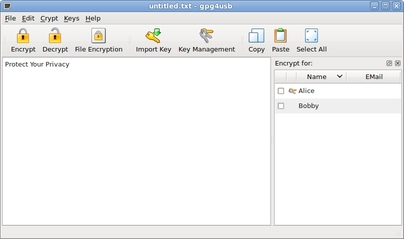

Howto encrypt a text
There are three steps for encrypting a text. We assume, that Alice wants to encrypt a text for Bobby.
STEP 1: Write the text
First Alice writes her text.

STEP 2: Choose key(s)
Secondly she chooses Bobbies key. NOTE: You can also choose mutiple keys, so that the text is encrypted for more than one person. So e.g. you should always select your own key, so that you can encrypt your own texts later.

STEP 3: Encrypt message
Finally Alice hits the encrypt button to encrypt the text. Alternatively she could use the shortcut Ctrl+E or use the menu crypto->encrypt